Simulink® Power Window Controller Specification
The MATLAB® and Simulink® product families consists of a set of versatile tools that support Model-Based Development for embedded control design all the way from initial specification to code generation.
To manage the complexity of not only today's engineered systems but also of their design teams, structured analysis methods are used to systematically arrive at rigorous, unambiguous, and consistent specifications.
In this context, the MATLAB and Simulink product families can be used to provide executable specifications that support system design closer to its actual realization than typical Computer-Aided Systems/Software Engineering (CASE) tools can.
This example shows how you can use MathWorks® tool set and the Model-Based Development process to go from concept through to implementation. In addition, this demo illustrates how you can link your model to your system documentation.
Contents
- Requirements
- High Level Discrete Event Control Specification
- Validation of the Control Subsystem
- Hybrid Dynamic System: Combine Discrete Event Control and Continuous Plant
- Detailed Modeling of Power Effects
- Visualization of the System in Motion
- Control Law Evaluation
- Realistic Armature Measurement
- Reorganizing the Model
- Communication Protocols
- Automatic Code Generation for Control Subsystem
- References
Requirements
Nowadays, electronics are used in automobiles to control, e.g., the opening and closing of windows and sun-roof, adjusting the mirrors/headlights, and to lock and unlock the doors. These systems are subject to stringent operation constraints as failure may result in dangerous and possibly life-threatening situations. Therefore, a careful design and analysis is mandatory before deployment.
In this example, let's concentrate on the power window system of an automobile, specifically, the passenger-side window. A critical aspect of this system is that it can never exert a force of more than 100 [N] on an object when closing the window, see:

When such an object is detected, the window is to be lowered by about 10 [cm].
More formally, the quantitative requirements for the control can be stated:
- The window has to be fully opened and fully closed within 4 [s].
- If the up or down command is issued for at least 200 [ms] and at most 1 [s], the window has to be fully opened or closed, respectively.
- The window has to start moving 200 [ms] after the command is issued.
- The force to detect when an object is present should be less than 100 [N].
- When an object is present, the window should be lowered by approximately 10 [cm].
High Level Discrete Event Control Specification
The discrete event control of the window can be modeled by a statechart, i.e., a finite state machine with hierarchy and parallelism. This state machine contains the basic states of the power window system up, auto-up, down, auto-down, rest, and emergency. It models the state transitions between these and accounts for the precedence of driver commands over the passenger commands. It also includes emergency behavior that is to be activated when an object is detected to be present between the window and the frame while moving up.
The initial Simulink model for the power window control is a discrete event controller that runs at a given sample rate.
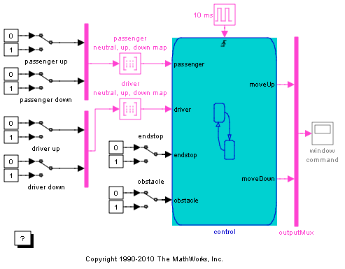 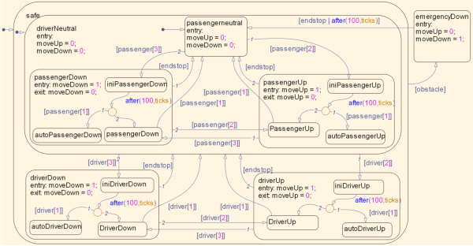 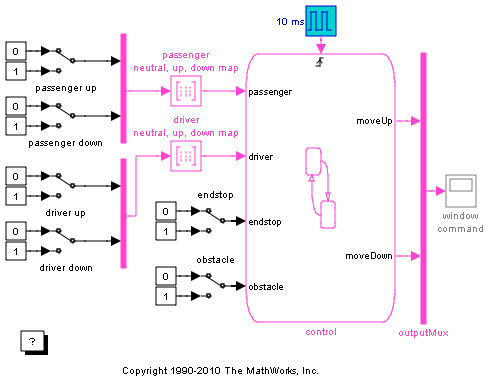The discrete event control is a Stateflow® model that extends the state transition diagram notion with hierarchy and parallelism. Note that state changes because of passenger commands are encapsulated in a super state that corresponds to no active driver commands.
Here, the control of the passenger window is considered. This window can be moved up and down by either the passenger or the driver. The model includes this control input as switches that can be manually operated by double-clicking them.
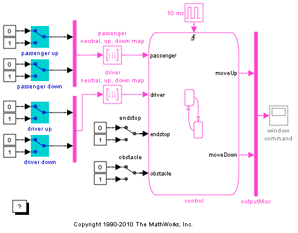The state machine that controls a power window is tested by running the input test vectors and verifying that the desired internal state is reached and output is generated. The power window has four external inputs:
- passenger input consists of a vector with three elements
- neutral: the passenger control switch is not depressed
- up: the passenger control switch generates the up signal
- down: the passenger control switch generates the down signal
- driver input
- neutral: the driver control switch is not depressed
- up: the driver control switch generates the up signal
- down: the driver control switch generates the down signal
- whether top or bottom of the window frame is reached
- 0: window moves freely between top or bottom
- 1: window is stuck at the top or bottom because of physical limitations
- whether an obstacle is present between the window and its frame
- 0: window moves freely between top or bottom
- 1: window is stuck at the top or bottom because of physical limitations
The passenger and driver input signals are generated by mapping the up and down signals according to the following table
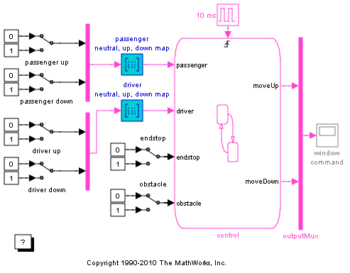
| up | down | neutral | up | down |
| 0 | 0 | 1 | 0 | 0 |
| 0 | 1 | 0 | 0 | 1 |
| 1 | 0 | 0 | 1 | 0 |
| 1 | 1 | 1 | 0 | 0 |
to explicitly generate the neutral event from the up and down events as generated by pressing a power window control switch. The blue part of the table is entered as truth table in the map.
Window Up
To observe the state machine behavior, first run the simulation and then double-click the passenger window up switch.
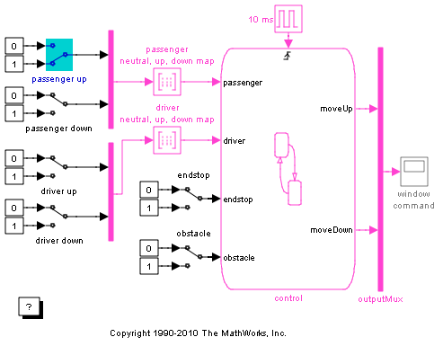If the switch was pressed for more than one second, the window moves up till the up switch is released (or the top of the window frame is reached and the endstop event is generated).
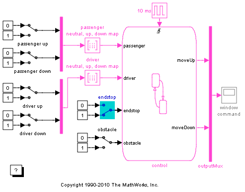 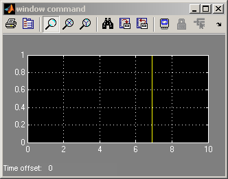Window Auto-Up
If the passenger up switch was pressed for a short period of time (less than a second), auto-up is activated and the window continues to move up. Ultimately, the window reaches the top of the frame and the endstop event is generated that moves the state machine back to its neutral state.
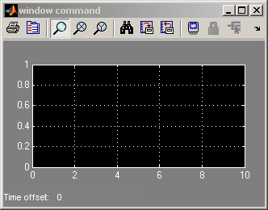Driver-side Precedence
The driver switch for the passenger window takes precedence over the driver commands. To observe the state machine behavior, first run the simulation and then move the system to its passenger up state by double-clicking the passenger window up switch.
Next, double-click the driver window down switch.
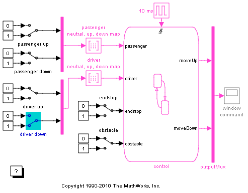 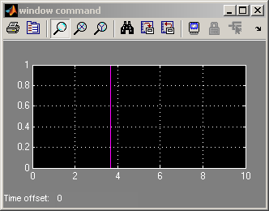Notice how the state machine moves to the driver control part to generate the window down output instead of the window up output.
When the driver control is switched to up, the driver window up state is reached that generates the window up output again, i.e., windowUp = 1.
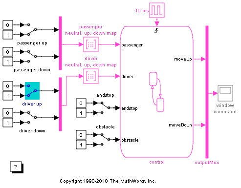To observe state behavior when an object is present between the window and its frame, double-click the obstacle switch.
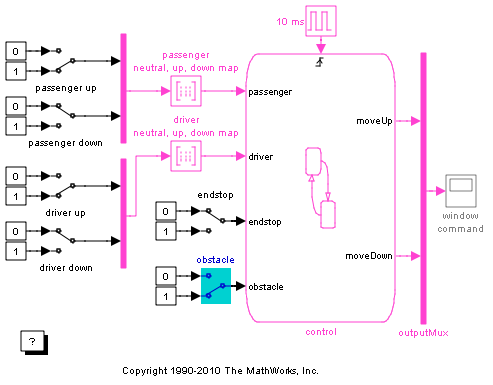On the next sample time, the state machine moves to its emergencyDown state to lower the window a few inches. How far exactly depends on how long the state machine is in the emergencyDown state and is part of the next analysis phase.
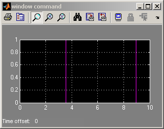Note that if any of the driver or passenger window switches is still active, the state machine moves into the up or down states upon the next sample time after the emergency state is departed. If the obstacle switch is still active too, the emergency state is then activated at again the next sample time.
Validation of the Control Subsystem
We can now validate the discrete event control of the window with the model coverage tool. This tool will help us determine the extent to which a model test case exercises the conditional branches of the controller. It helps evaluate whether all transitions in the discrete event control are taken given the test case we run as well as whether all clauses in a condition that enables a particular transition have become true. One transition may be enabled by multiple clauses, e.g., the transition from emergency back to neutral occurs when either 100 ticks have occurred or whether the end stop is reached.
To achieve full coverage, it is required that each of the individual clauses evaluates to true and false for the test cases used. The percentage of transitions that a test case exercises is called its model coverage. Model coverage is a measure of how thoroughly a test exercises a model.
Using Simulink® Verification and Validation™, let us apply the following test to our power window controller:
| step | 0 | 1 | 2 | 3 | 4 | 5 | 6 |
| passenger up | 0 | 0 | 0 | 0 | 0 | 0 | 0 |
| passenger down | 0 | 0 | 0 | 1 | 0 | 1 | 1 |
| driver up | 0 | 0 | 1 | 0 | 1 | 0 | 1 |
| driver down | 0 | 1 | 0 | 0 | 1 | 1 | 0 |
With this test, all switches are inactive at time 0. At regular 1 [s] steps, the state of one or more of the switches is changed. For example, after 1 [s], the driver down switch becomes active. To automatically run these input vectors, replace the manual switches by prescribed sequences of input. To see the pre-constructed model:
open_system('powerwindow_cv')
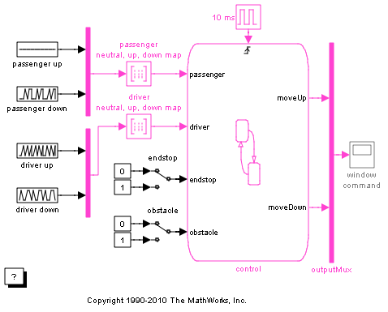The commands to generate the test and create the Simulink Verification and Validation coverage report are as follows:
- Create a test object to hold the coverage results. testObj1 = cvtest('powerwindow_cv', 'first_test', 'load firsttest')
- Simulate the system for 7 [s]. [dataObj1,T,X,Y]=cvsim(testObj1,[0 7])
- Create and open an HTML report with the coverage data. cvhtml('powerwindow_cv report',dataObj1)
You can use the above commands to create the coverage report.
The results in the report reveal the following:
The test we have run handles 100% of the decision outcomes from the "driver neutral, up, down map" block while only 50% of the decision outcome of the "passenger neutral, up, down map" block is handled by the test. Also, the "endstop" and "obstacle" blocks are covered at 50% of their decision outcomes.
Hybrid Dynamic System: Combine Discrete Event Control and Continuous Plant
Once the discrete event control has been designed and verified, it can be coupled to the continuous time plant behavior. To this end, first remove initial input/output blocks that connect to ports that have to be connected to the continuous plant behavior.
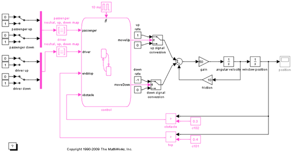The plant is modeled as a second order differential equation with step-wise changes in its input:
- when the Stateflow chart generates windowUp the input is 1,
- when the Stateflow chart generates windowDown the input is -1,
- otherwise, the input is 0.
This phase allows analysis of the interaction between the discrete event state behavior, its sample rate, and the continuous behavior of the window movement. There are threshold values established to generate the window frame top and bottom, i.e., endStop, events and the event when an obstacle is present, i.e., obstacle.
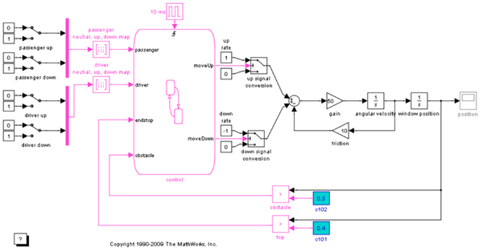Before simulation, a continuous time solver has to be selected. You can do so by selecting the Simulation menu, then the Simulation parameters item and next the Solver tab. You can change the solver parameter to the Bogacki-Shampine solver.
A structured analysis of a system results in a functional decomposition of the system, a data dictionary with the specifics of the system signals, and the timing constraints. Another aspect is the implementation architecture, which is not discussed here.
Activity Diagrams
Activity diagrams are a means to graphically capture the specification and gain understanding of system operation. A hierarchical structure facilitates analysis of even large systems. At the top-level, a context diagram describes the system environment its interaction with the system under study in terms of (i) data exchange and (ii) control operations. The system is then decomposed into an activity diagram with processes and control specifications (called a CSPEC). The processes guide the hierarchical decomposition: Each process is specified by another activity diagram or a primitive specification (called a PSPEC). A PSPEC can be given in a number of representations with a formal semantic, e.g., a Simulink block diagram.
The following figure represents the context diagram of a power window system. The square boxes capture the environment. In this case, the driver, passenger and the window. Both the driver and passenger can send commands to the window to move it up and down. The controller infers the correct command to be sent to the window actuator (e.g., the driver command has priority over the passenger command). In addition, the state of the window system is monitored to establish when the window is fully opened and closed and to detect whether an object is present between the window and frame.
CONTEXT DIAGRAM: POWER WINDOW SYSTEM
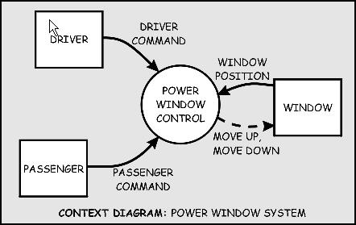
The power window controller is depicted by a circle (also referred to as 'bubble'). This is the graphical notation for a process. Processes capture the transformation of input data into output data. In case of a primitive process, control may also be generated. CSPECs typically consist of combinational or sequential logic to infer output control signals from input control.
Let's rearrange the Simulink model to resemble the activity diagram by
- combining the plant behavior into one subsystem,
- combining the driver and passenger switches into two subsystems,
- putting the control in one subsystem, and
- connecting the new subsystems.
- resize for the context diagram.
open_system('powerwindow01')
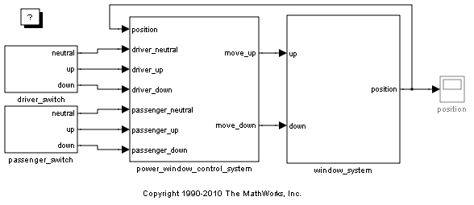Now, the power window controller of the context diagram can be decomposed into parts by using an activity diagram as shown below. The input and output signals present in the context diagram are shown here again so they can be easily traced to their origins.
AD 1: POWER WINDOW CONTROL
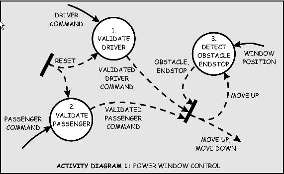
The power window control consists of three processes and a CSPEC. Two of the processes validate the driver and passenger input to ensure their input is meaningful given the state of the system (e.g., if the window is completely opened, the 'window down' command is not sensible). The remaining process detects whether the window is completely opened or completely closed and whether an object may be present. The CSPEC takes the control signals and infers whether the window should be moved up or down (e.g., if an object is present, the window should be moved down for about one second or until an endstop is reached).
In Simulink, open the power window control subsystem and note that the Stateflow chart with the discrete event control forms the CSPEC, represented by the tilted thick bar in the bottom right corner. The threshold detection mechanisms are encapsulated in the detect_obstacle_endstop subsystem.
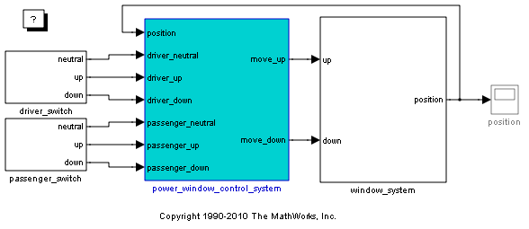 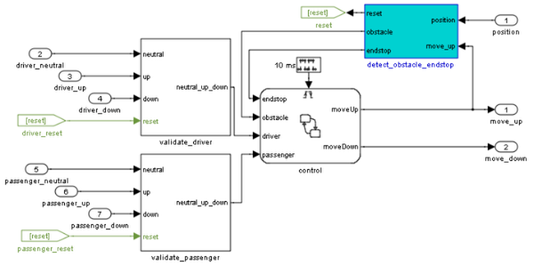Data validation functionality was added for the driver and passenger commands to ensure correct operation (e.g., when the window has reached its top, the up command should be blocked). Each of the validation process can be decomposed in new subsystems. Let's have a look at the validation of the driver's commands (validation of the passenger's commands is similar). First, it has to be checked whether the 'up' or 'down' commands can be executed. The 'down' command is only allowed when the window is not completely opened. The 'up' command is only allowed when the window is not completely closed and no object is detected. The third process ensures that only one of the three commands ('neutral', 'up', 'down') is sent to the controller. Note that in an actual implementation, it may well be possible that both 'up' and 'down' are true simultaneously (e.g., because of switch bouncing effects).
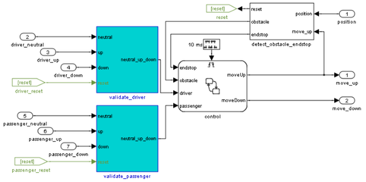AD 1.1: VALIDATE DRIVER

Each of the processes in the VALIDATE DRIVER activity chart is primitive and specified by a PSPEC. These PSPECs are given below according to the previous discussion. Note that in the MAKE EXCLUSIVE PSPEC the 'down' command takes precedence over the 'up' command, for safety reasons.
|
PSPEC 1.1.1: CHECK DOWN
| |||
| CHECKED_DOWN | = | DOWN and not RESET | |
|
PSPEC 1.1.2: CHECK UP
| |||
| CHECKED_UP | = | UP and not RESET | |
|
PSPEC 1.1.3: MAKE EXCLUSIVE
| |||
| VALIDATED_DOWN | = | CHECKED_DOWN | |
| VALIDATED_UP | = | CHECKED_UP and not CHECKED_DOWN | |
| VALIDATED_NEUTRAL | = | (NEUTRAL and not (CHECKED_UP and not CHECKED_DOWN)) or not (CHECKED_UP or CHECKED_DOWN) | |
The internals of the VALIDATE PASSENGER process are exactly the same as the VALIDATE DRIVER process. The only difference between the two are the different input and output. The VALIDATE PASSENGER is given below.
AD 1.2: VALIDATE PASSENGER
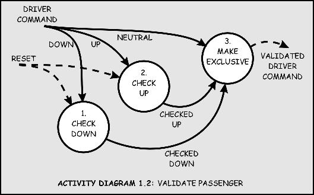
|
PSPEC 1.2.1: CHECK DOWN
| |||
| CHECKED_DOWN | = | DOWN and not RESET | |
|
PSPEC 1.2.2: CHECK UP
| |||
| CHECKED_UP | = | UP and not RESET | |
|
PSPEC 1.2.3: MAKE EXCLUSIVE
| |||
| VALIDATED_DOWN | = | CHECKED_DOWN | |
| VALIDATED_UP | = | CHECKED_UP and not CHECKED_DOWN | |
| VALIDATED_NEUTRAL | = | (NEUTRAL and not (CHECKED_UP and not CHECKED_DOWN)) or not (CHECKED_UP or CHECKED_DOWN) | |
The third process in the POWER WINDOW CONTROL activity diagram is the one to detect the presence of an obstacle or when the window reaches its top or bottom ('endstop'). The detection mechanism is based on the armature current of the window actuator. During normal operation, this current is within certain bounds. When the window reaches its top or bottom, the electro-motor draws a large current (more than 15 [A] or less than -15 [A]) to try and sustain its angular velocity. Similarly, during normal operation the current is about 2 [A] or -2 [A] (depending on whether the window is opening or closing). When an object is present, there is a slight deviation from this value. To ensure the window force on the object is less than 100 [N], the control switches to its emergency operation when a current is detected that is less than -2.5 [A] (this is only necessary in case the window is rolling up, which corresponds to a negative current in the particular wiring of this model). This functionality is embodied by the DETECT OBSTACLE ENDSTOP activity diagram and the process specifications given below.
AD 1.3: DETECT OBSTACLE ENDSTOP
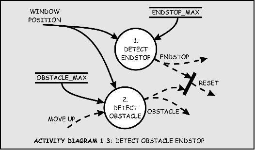
|
CSPEC 1.3: DETECT OBSTACLE ENDSTOP
| |||
| RESET | = | OBSTACLE or ENDSTOP | |
|
PSPEC 1.3.1: DETECT ENDSTOP
| |||
| ENDSTOP | = | ARMATURE_CURRENT > ENDSTOP_MAX | |
|
PSPEC 1.3.2: DETECT OBSTACLE
| |||
| OBSTACLE | = | (ARMATURE_CURRENT > OBSTACLE_MAX) and MOVE_UP for 500 [ms] | |
|
PSPEC 1.3.3: ABSOLUTE VALUE
| |||
| ABSOLUTE_ARMATURE_CURRENT | = | abs(ARMATURE_CURRENT) | |
Data Dictionary
The functional decomposition specifies each of the processes unambiguously by their decomposition or primitive specification (PSPEC). In addition, the signals in the activity diagrams have to be formally specified as well. This is the goal of the data dictionary.
The data dictionary contains a table with entries for each of the signals used in any of the activity diagrams.
| AD0 | POWER WINDOW SYSTEM | ||||
| DRIVER_COMMAND | DATA | DISCRETE | AGGREGATE | NEUTRAL,UP,DOWN | |
| PASSENGER_COMMAND | DATA | DISCRETE | AGGREGATE | NEUTRAL,UP,DOWN | |
| WINDOW_POSITION | DATA | CONTINUOUS | REAL | MIN: 0 [m] | MAX: 0.4 [m} |
| MOVE_UP | CONTROL | DISCRETE | BOOLEAN | 'TRUE','FALSE' | |
| MOVE_DOWN | CONTROL | DISCRETE | BOOLEAN | 'TRUE','FALSE' | |
| AD1 | POWER WINDOW CONTROLLER | ||||
| RESET | CONTROL | DISCRETE | BOOLEAN | 'TRUE','FALSE' | |
| VALIDATED_DRIVER_COMMAND | CONTROL | DISCRETE | AGGREGATE | NEUTRAL,UP,DOWN | |
| VALIDATED_PASSENGER_COMMAND | CONTROL | DISCRETE | AGGREGATE | NEUTRAL,UP,DOWN | |
| OBSTACLE | CONTROL | DISCRETE | BOOLEAN | 'TRUE','FALSE' | |
| ENDSTOP | CONTROL | DISCRETE | BOOLEAN | 'TRUE','FALSE' | |
| AD1.1 | VALIDATE_DRIVER | ||||
| NEUTRAL | DATA | DISCRETE | BOOLEAN | 'TRUE','FALSE' | |
| UP | DATA | DISCRETE | BOOLEAN | 'TRUE','FALSE' | |
| DOWN | DATA | DISCRETE | BOOLEAN | 'TRUE','FALSE' | |
| CHECKED UP | DATA | DISCRETE | BOOLEAN | 'TRUE','FALSE' | |
| CHECKED DOWN | DATA | DISCRETE | BOOLEAN | 'TRUE','FALSE' | |
| AD1.2 | VALIDATE_PASSENGER | ||||
| NEUTRAL | DATA | DISCRETE | BOOLEAN | 'TRUE','FALSE' | |
| UP | DATA | DISCRETE | BOOLEAN | 'TRUE','FALSE' | |
| DOWN | DATA | DISCRETE | BOOLEAN | 'TRUE','FALSE' | |
| CHECKED UP | DATA | DISCRETE | BOOLEAN | 'TRUE','FALSE' | |
| CHECKED DOWN | DATA | DISCRETE | BOOLEAN | 'TRUE','FALSE' | |
| AD1.3 | DETECT_OBSTACLE_ENDSTOP | ||||
| ENDSTOP_MIN | DATA | CONSTANT | REAL | VALUE: 0.0 [m] | |
| ENDSTOP_MAX | DATA | CONSTANT | REAL | VALUE: 0.4 [m] | |
| OBSTACLE_MAX | DATA | CONSTANT | REAL | VALUE: 0.3 [m] | |
Timing Requirements
Now, reopen powerwindow01 and open the position measurement> (in [m]) to view the window movement and run the simulation.
Double-click the passenger window up switch to start moving the window up.
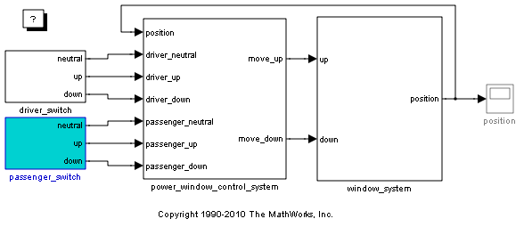 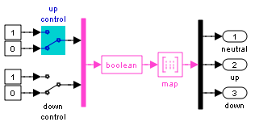 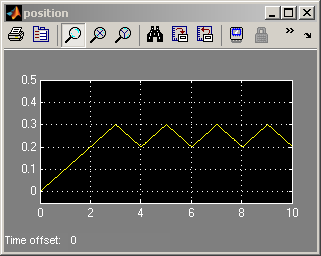After 30 [cm], the obstacle event is generated and the Stateflow chart moves into its emergencyDown state. In this state, windowDown is output for some time to lower the window by about 10 [cm]. Because the passenger window up switch is still on, the window starts moving up again and this process repeats. Stop the simulation and press the Autoscale button on the position scope to observe the oscillating process. Note that in case of an emergency the discrete event control rolls down the window approximately 10 [cm].
Detailed Modeling of Power Effects
After an initial analysis of the discrete event control and continuous dynamics, a detailed plant model can be used to evaluate performance in a more realistic situation. Models at such a level of detail are best designed in the power domain, i.e., as energy flows. This is facilitated by several domain specific blocksets.
Before including this behavior, first remove the continuous behavior included before and add a more detailed subsystem consisting of power electronics and a multi-body system.
open_system('powerwindow02');
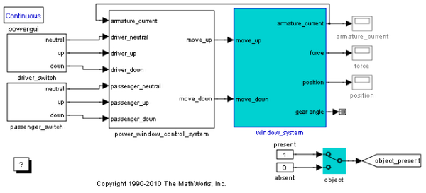 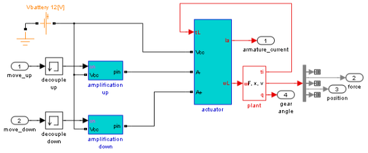 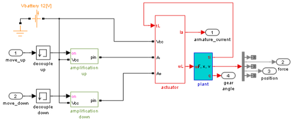Let's have a look at these in detail next.
Power Electronics
The control signals generated by the discrete event controller have to be 'amped up' to be sufficiently powerful to drive the DC motor that moves the window.
 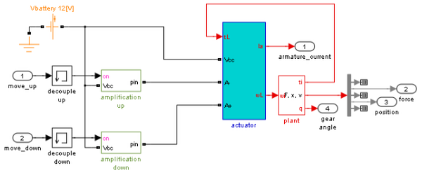 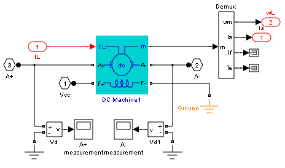
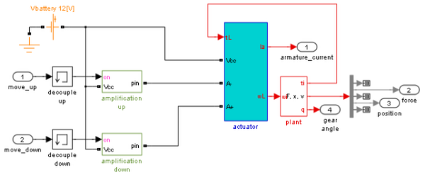 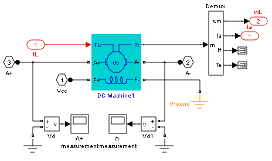 This is modeled by the amplification modules. It shows that a switch either connects the DC motor to the battery voltage or ground. By connecting the battery reversely, a negative voltage is obtained and the window can be moved up, down, or remain at its position. Note that the window is always driven at maximum power, i.e., no DC motor controller is present to apply a prescribed velocity.
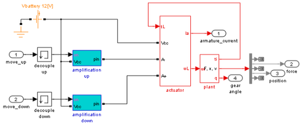 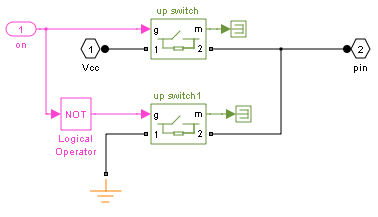Multi-Body System
The window is modeled by using the multi-body system blockset.
This consists of a library of noncausal multi-body elements such as bodies, joints, and actuators. The window model consists of
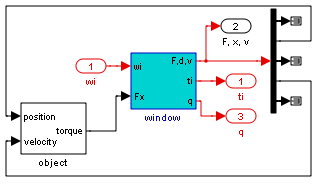a worm gear
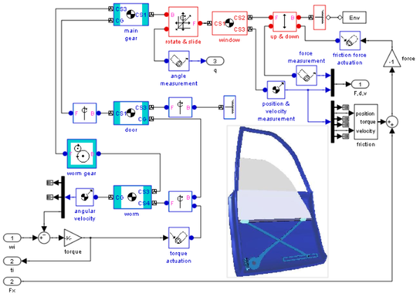and lever
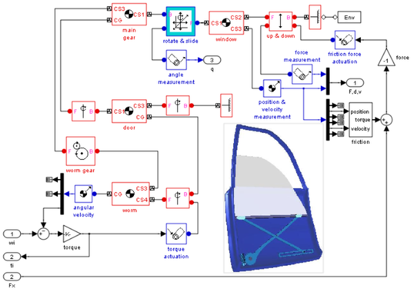to move the window holder in the vertical direction.
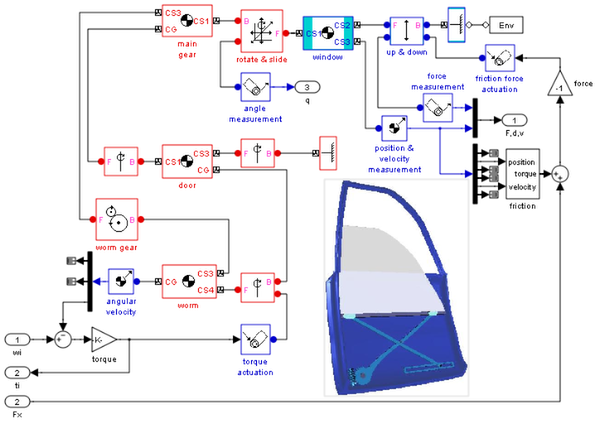The following figure shows how the mechanical parts move:

Design Iteration
An important effect of the more detailed implementation is that there is no window position measurement available. Instead, the current of the DC motor is measured and used to detect the endstops and whether an obstacle is present. This brings about the next stage in system design which now allows to analyze the control and whether it indeed does not cause too large a force when an obstacle is present.
In the originally designed system, the obstacle and endstop detection based on the window position was removed and replaced with a current based implementation, and the process was connected to the controller and position and force measurements. This means that the data dictionary has to be modified to reflect the different signals used.
| AD0 | POWER WINDOW SYSTEM | ||||
| ARMATURE_CURRENT | DATA | CONTINUOUS | REAL | MIN: -20 [A] | MAX: 20 [A} |
| AD1.3 | DETECT_OBSTACLE_ENDSTOP | ||||
| ABSOLUTE_ARMATURE_CURRENT | DATA | CONTINUOUS | REAL | MIN: 0 [A] | MAX: 20 [A] |
| ENDSTOP_MAX | DATA | CONSTANT | REAL | VALUE: 15 [A] | |
| OBSTACLE_MAX | DATA | CONSTANT | REAL | VALUE: 2.5 [A] | |
A control mechanism was added to conveniently switch between the presence and absence of the object.
Visualization of the System in Motion
To view the geometrics of the system in motion, add a virtual reality world and open it by double-clicking on the block.
open_system('powerwindow03')
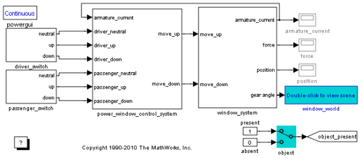 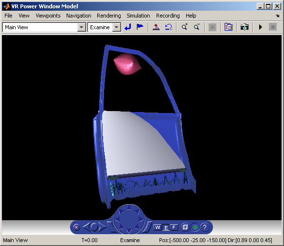Select a stiff solver, e.g., the TR-BDF2 (an implicit Runge-Kutta formula).
Set the passenger up switch to on and the driver up switch to off and run the simulation again. After some initial time less than 1 [s] but more than 10 [ms] in simulation time (simulation time is displayed in the bottom-right corner of the model window status bar), switch off the passenger up switch to initiate the auto-up behavior.
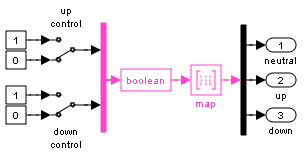 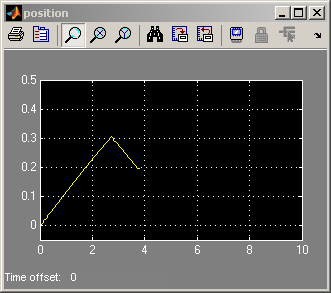 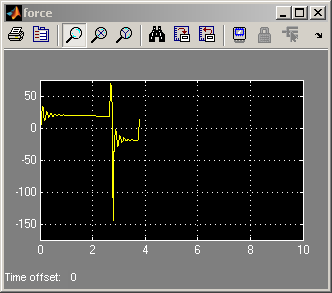 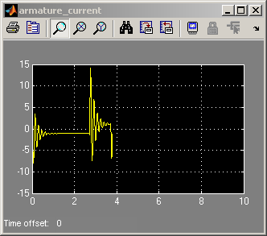Notice how the window holder starts to move vertically to close the window. When the object is encountered, the window is rolled down.
Click the driver down switch to roll down the window completely. Again, after some initial time (less than one second simulation time) switch off the driver down switch to initiate the auto-down behavior.
 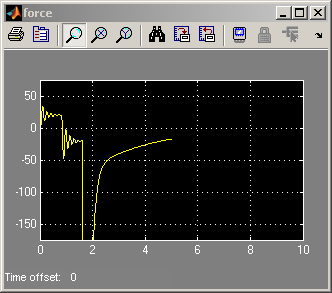 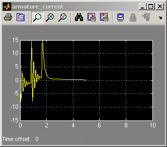
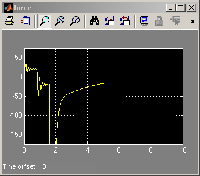 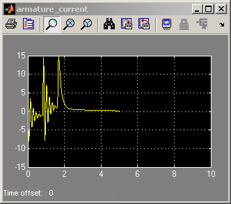 When the window has reached the bottom of the frame, stop the simulation.
Now, look at the position measurement> (in [m]) and at the armature current (Ia) measurement (in [A]).
Note that the absolute value of the armature current transient during normal behavior does not exceed 10 [A]. The obstacle is detected when the absolute value of the armature current required to move the window up exceeds 2.5 [A] (in fact, it less than -2.5 [A]) where during normal operation this is about 2 [A]. You probably have to zoom in to have a good look at this. The window endstop is detected when the absolute value of the armature current exceeds 15 [A].
Variation in the armature current during normal operation is due to friction that is included by sensing joint velocities and positions and applying window specific coefficients.
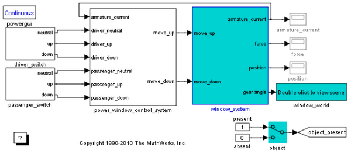 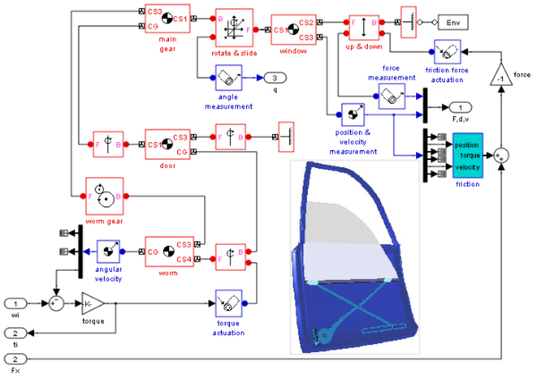A look-up table is used to this end and noise is added to allow evaluation of the control robustness.
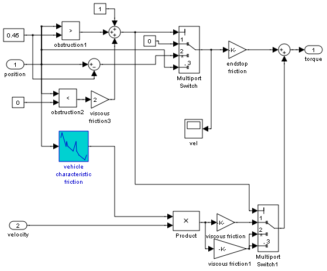Control Law Evaluation
While the idealized continuous plant allowed access to the window position for endStop and obstacle event generation, in the more realistic situation, these events have to be generated from accessible physical variables. In case of the power window system, this typical is the armature current, Ia, of the DC motor that drives the worm gear.
While moving the window, this current will have a value around 2 [A] and when switched on, a transient current is drawn that may reach values of around 10 [A]. End stop detection is activated when the current exceeds a value of 15 [A], which is drawn when the angular velocity of the motor is kept almost 0 despite a positive or negative input voltage.
Detecting the presence of an object is much more difficult in this setup. Because safety restrictions prescribe that the window force should not exceed 100 [N], an object should be detected by an armature current much less than 10 [A]. However, this conflicts with the transient values achieved during normal operation.
Here, a control law is implemented that disables object detection during the transient. Now, when an armature current that is more than 2 [A] is measured, an object is considered to be present and the emergencyDown state of the discrete event control is entered. Open the window force measurement (in [N]) to verify that the force exerted when an object is present and the window reverses its velocity remains less than 100 [N].
Note that far more sophisticated control laws are possible and implemented in reality. For example, neural-network based learning feedforward control techniques can be implemented to emulate the friction characteristic of each individual vehicle and its changes over time.
Realistic Armature Measurement
The armature current as used in the power window control is an ideal value that is accessible because of the use of an actuator model. In a more realistic situation, this current value has to be measured by data acquisition components.
To include these, first remove the ideal measurement. Next, add the more realistic measurement that include a signal conditioning block where the current is derived based on a voltage measurement.
This voltage is within the range of an analog-to-digital converter (ADC) that discretizes based on a given number of bits. The resulting value has to be scaled based on the value of the resistor that is used and the range of the ADC that is chosen.
Include these operations as fixed point computations. Notice that 16 bits are required instead of 8 to achieve the necessary resolution with the given range.
Study the same scenario
- set the passenger up switch
- run the simulation
- after some time switch off the passenger up switch
- when the window has been rolled down, click the driver down switch
- after some time switch off the driver down switch
- when the window has reached the bottom of the frame, stop the simulation.

Notice how the armature current now has a discretized appearance by zooming in on it.
Reorganizing the Model
To avoid cluttered diagrams, the designed model was reorganized using subsystems.
- First, collapse the DAQ subsystem
- Next, collapse the actuator and plant subsystems
Communication Protocols
Similar to the Stateflow output part, the input events have to be generated by hardware, in this case the window control switches in the door and center control panels. These events are generated by local processors and then communicated to the window controller by a CAN bus.
open_system('powerwindow05')
To include these phenomena, first remove the idealized input and add input from a CAN bus. Next, add switch components that generate the events and put these on the CAN bus. If you open the switch subsystem,
you note a structure very similar to the window control system: again, there is a plant model that represents the control switch,
a data acquisition subsystem that includes, among other things, signal conditioning components,
a control module to map the commands from the physical switch to logical commands,
and a CAN module to post the events to the vehicle data bus.
Additional communication effects (e.g., because of other systems using the CAN bus) and more realism can be added similar to the described phases. Each of these phases allows analysis of the discrete event controller in an increasingly realistic situation. Once a sufficient level of detail is achieved, controller code can be automatically generated for any specific target platform.
Automatic Code Generation for Control Subsystem
To generate code of the designed control
first check the sample rates of the controller by selecting Sample time colors from the Port/Signal Displays entry of the Format menu. This shows that the controller runs at a uniform sample rate.
Now, click your right mouse-button on the window control module and from Real-Time Workshop(R) select Build Subsystem to build real-time code of the subsystem.
References
Pieter J. Mosterman, Janos Sztipanovits, and Sebastian Engell, "Computer-Automated Multiparadigm Modeling in Control Systems Technology," IEEE Transactions on Control Systems Technology, vol. 12, no. 2, pp. 223-234, 2004.